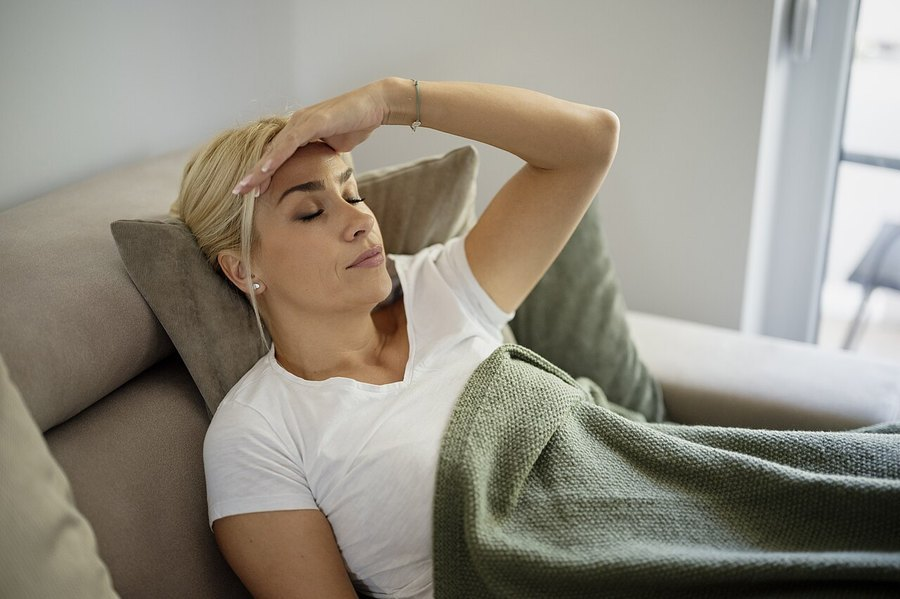

Waking Up at 3 AM Every Night? Here's What's Actually Causing It
It's one of the most common sleep complaints there is, and it's rarely as serious as it feels at 3 AM. Here's what usually drives it, and what actually helps you get back to sleep.

Key takeaways
- Waking at 3 AM most nights usually traces to a cortisol rise, lighter sleep stages, alcohol, or hormonal shifts, not a serious disorder by itself.
- Checking the clock makes it worse. Seeing the time and calculating lost sleep is one of the most reliable ways to turn a short waking into a long one.
- Alcohol before bed is a common, fixable cause. It can speed sleep onset, then trigger a rebound waking a few hours later.
- Perimenopause and menopause disrupt sleep directly, through temperature regulation and falling progesterone, often years before hot flashes become the obvious explanation.
- See a doctor if it's frequent, tiring, or paired with loud snoring or gasping. Those point toward sleep apnea, which needs its own evaluation.
Waking up at 3 AM most nights usually comes down to a lighter stage of sleep combined with a nudge that's enough to break through it: a cortisol rise, a full bladder, alcohol wearing off, a hot room, or hormonal shifts. It's common, and it's rarely dangerous by itself.
That doesn't make it pleasant. Lying there doing math on how many hours are left before the alarm is its own kind of stress, and the worry about not sleeping can become the very thing that keeps you awake.
What usually causes waking up at 3 AM every night?
Sleep isn't one steady state. It cycles through roughly 90-minute rounds of light sleep, deep sleep and REM, and by the middle of the night deep sleep gets scarcer while lighter stages take up more of each cycle. That makes the 2 AM to 4 AM stretch the easiest to be nudged awake by almost anything: a sound, a dream, a full bladder, or a small shift in body temperature.
Cortisol follows its own rhythm too. Levels dip to their lowest in the evening, then start climbing in the second half of the night to help you wake up in the morning. For some people that rise starts earlier than it should and lands with enough force around 3 AM to pull them fully awake, heart sometimes going, mind already racing.
Why does cortisol spike in the early hours?
Chronic stress and poor sleep habits both push this rhythm earlier. A demanding job, financial worry, or a habit of checking the clock and calculating lost sleep time all keep the stress-response system primed, and a primed system fires more easily at the one time of night when sleep is already thinnest.
This creates a loop that's worth naming, because naming it helps break it. Waking at 3 AM triggers worry about tomorrow, worry raises cortisol further, and the raised cortisol makes it harder to fall back asleep. None of that means something is medically wrong. It means the nervous system has learned a habit, and habits can be unlearned. A short, boring routine, the same few minutes of slow breathing or quiet reading every time you wake, teaches the nervous system that 3 AM isn't an emergency worth revving up for.
Can depression cause waking at 3 AM too?
Early-morning waking, sometimes well before the alarm, is a recognized feature of depression for some people, distinct from the stress-driven waking described above. It tends to come bundled with a flat or low mood that doesn't lift much once the day starts, not just trouble sleeping on its own.
That pattern is a reason to talk to a doctor rather than something to self-diagnose from one rough week. Depression-linked early waking usually responds to treating the depression itself, not to sleep hygiene changes alone, which is why it's worth naming separately from ordinary stress.
Can perimenopause or menopause explain it?
Yes, and it's one of the more common causes in women in their 40s and 50s. Falling and fluctuating estrogen and progesterone disrupt temperature regulation and sleep architecture directly, and night sweats or hot flashes often hit in that same early-morning window. See our guide to early perimenopause symptoms for the fuller picture of what else tends to show up around the same time.
Progesterone in particular has a mild sedating, sleep-supporting effect, and levels of it tend to fall earlier in perimenopause than estrogen does. Losing that effect before anything else changes can mean disrupted sleep shows up years before hot flashes become the obvious explanation.
Does alcohol cause middle-of-the-night waking?
Often, yes. Alcohol can make you fall asleep faster, which is exactly why it feels like it helps. But as the body metabolizes it over the next few hours, it triggers a rebound effect: lighter, more fragmented sleep and a surge in adrenaline-like activity that frequently breaks through around the three-to-four-hour mark after the last drink.
Two drinks close to bedtime is a common enough pattern that cutting it back, or at least moving last call a few hours earlier, is one of the more reliably effective single changes for middle-of-the-night waking.
Could a blood sugar dip be the trigger?
It's plausible, though less common than cortisol or alcohol. A sharp drop in blood sugar overnight can trigger a stress-hormone response, adrenaline and cortisol both, to push sugar back up, and that hormonal jolt is enough to wake some people. It tends to show up after a low-carbohydrate dinner, a skipped dinner, or heavy evening exercise without enough food to refuel.
A small, protein-containing snack before bed is a reasonable thing to try if this pattern feels familiar. It isn't a fix for everyone, and for most people the cause lies elsewhere.
Does what you eat or drink during the day affect it?
Caffeine's half-life is roughly five to six hours, so a 3 p.m. coffee is still partly active at 9 p.m., which can thin out deep sleep later in the night even if it doesn't stop you from falling asleep on schedule. A late, heavy, or very salty dinner can do something similar by keeping digestion active and nudging you toward a bathroom trip overnight.
Hydration timing matters more than most people expect, too. Front-loading water earlier in the day and tapering off in the two hours before bed cuts down on the single most common reason healthy adults wake up at all: a full bladder.
Is it insomnia, or could it be sleep apnea?
Occasional 3 AM waking that resolves in a few minutes isn't insomnia. It becomes sleep-maintenance insomnia when it happens most nights, for a month or more, and leaves you tired the next day. That's a distinct pattern from trouble falling asleep in the first place, and the two don't always share a cause.
Sleep apnea deserves a separate mention because it's commonly mistaken for ordinary insomnia. Repeated breathing pauses fragment sleep without always causing a full, memory-forming waking, though some people do wake gasping or with a racing heart. Loud snoring, a partner noticing breathing pauses, or morning headaches are reasons to ask a doctor about a sleep study rather than assuming it's stress. Left unaddressed for years, untreated sleep apnea is also linked to higher long-term cardiovascular and cognitive risk, which is one more reason not to wave away a pattern that keeps repeating.
| Possible cause | Other clues | What tends to help |
|---|---|---|
| Cortisol / stress rise | Racing thoughts, tense body, worse on stressful days | Slow breathing, writing down tomorrow's worries, treating daytime stress |
| Alcohol rebound | A drink within a few hours of bed | Cut back, or move drinking earlier in the evening |
| Perimenopause / menopause | Night sweats, irregular periods, hot flashes | See early perimenopause signs; talk to a doctor about options |
| Blood sugar dip | Light or skipped dinner, heavy evening exercise | A small protein snack before bed |
| Sleep apnea | Loud snoring, gasping, morning headache, partner notices pauses | Ask a doctor about a sleep study |
| Aging sleep changes / bathroom needs | Gradual onset, often tied to a bathroom trip | Treat the underlying cause (bladder, prostate, pain) |
Does getting older make 3 AM waking more common?
Somewhat. Sleep naturally gets lighter and more fragmented with age. Older adults spend less time in deep sleep and wake more easily from small disturbances, a noise, a bathroom need, a stiff joint. That shift is a normal part of aging sleep architecture, not a disorder by itself.
An enlarged prostate, an overactive bladder, and chronic pain all become more common with age too, and each is a plausible, fixable reason behind a 3 AM bathroom trip that turns into forty-five minutes of lying awake afterward. Treating the underlying issue, not just the waking itself, usually pays off more, and a doctor can often tell within one visit whether a bathroom trip is driving the waking or just happening to coincide with it.
Is there a 'normal' number of times to wake up at night?
Briefly, yes, more often than most people realize. Healthy sleepers naturally surface between sleep cycles several times a night, usually without remembering it the next morning. What separates a normal, forgettable stir from the kind of waking this article is about is how long it lasts and whether the mind switches fully on.
A two-second shift that fades back into sleep isn't the same event as lying there fully alert for forty minutes. The second kind is the one worth tracking, ideally with a short note of what time it happened and what, if anything, might have triggered it: a dream, noise, heat, or nothing you can pin down at all.
What actually helps you fall back asleep?
- Don't check the clock or your phone. Seeing the time, and doing the math on what's left, is one of the most reliable ways to turn a brief waking into a long one.
- Keep the room cool, dark and quiet, and keep a glass of water nearby so a dry mouth doesn't become a reason to get up.
- If you're not drifting back off within 15 to 20 minutes, get up and do something quiet and dim-lit in another room, then return once you feel sleepy. Lying there willing it to happen tends to backfire.
- Try slow breathing. A longer exhale than inhale calms the nervous system more reliably than 'just relax' ever does.
- If your mind is racing through tomorrow's to-do list, keep a notepad by the bed. Writing two lines down can quiet a looping thought enough to let sleep return.
- Skip the second nightcap. Alcohol closer to bedtime raises the odds of exactly this waking.
When is it time to see a doctor?
Bring it up if 3 AM waking happens most nights for a month or longer, leaves you tired or irritable during the day, or comes with loud snoring, gasping, or breathing pauses a partner notices. Those last three point toward sleep apnea and are worth an evaluation on their own, not something to sleep off.
The same goes for night sweats that soak the sheets, a racing heart that feels like more than ordinary worry, or waking tied closely to perimenopause symptoms that are otherwise affecting daily life. Cognitive behavioral therapy for insomnia (CBT-I) has the strongest evidence of any treatment for chronic middle-of-the-night waking, often outperforming sleep medication over time. For more on what protects sleep quality once you're actually asleep, see our full sleep coverage, and our piece on how long it should normally take to fall asleep.
Frequently asked questions
Is waking up at 3 AM a sign of liver problems, as some articles claim?
There's no solid medical evidence behind the popular claim that 3 AM waking specifically points to liver detox issues or traditional-medicine 'organ clocks.' The far better-supported explanations are cortisol timing, light sleep stages, alcohol, or hormonal shifts covered above.
Does magnesium help you stay asleep through the night?
Evidence is mixed and mostly limited to people who are low in magnesium to begin with. It may help modestly with sleep quality in that group. It isn't a reliable fix for 3 AM waking in someone with normal levels.
Why do I wake up at almost the exact same time every night?
A consistent wake time usually reflects a consistent trigger: a cortisol rhythm that peaks early, a bladder that fills on a predictable schedule, or a bedroom that cools or warms at a certain hour. The regularity is a clue, not a coincidence.
Can anxiety cause 3 AM waking without a diagnosed anxiety disorder?
Yes. You don't need a diagnosed disorder for stress hormones to disrupt sleep. A stressful week, an upcoming deadline, or unresolved worry can all raise cortisol enough to break through light sleep, then ease once the stressor passes.
Does looking at my phone during a 3 AM waking make it worse?
Probably, for two reasons. The light exposure can suppress melatonin, and whatever you look at, email, news, social feeds, tends to be stimulating in a way that works against falling back asleep.
Is it normal to wake up several times a night without remembering it?
Yes. Brief awakenings between sleep cycles are normal and usually forgotten within seconds. It's only when a waking stretches past a few minutes, or happens often enough to leave you tired, that it's worth paying attention to.
Can a too-warm bedroom cause waking overnight even if I fall asleep fine?
Yes. Core body temperature needs to drop for deep sleep, and a room that's too warm can trigger a waking later in the night even when it didn't stop you from falling asleep in the first place. Most sleep researchers suggest a bedroom a few degrees cooler than daytime comfort.
Related: How long it should normally take to fall asleep · Early perimenopause symptoms many women miss · Cortisol and memory: how stress hormones affect the brain · Sleep and memory: why deep sleep locks in recall
Image: Shixart1985 / Wikimedia Commons / CC BY 2.0